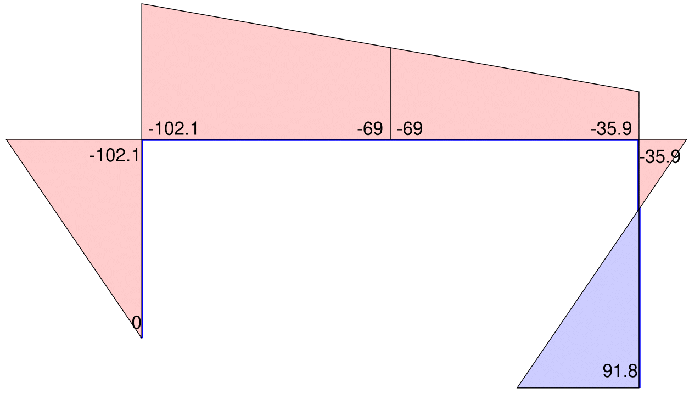
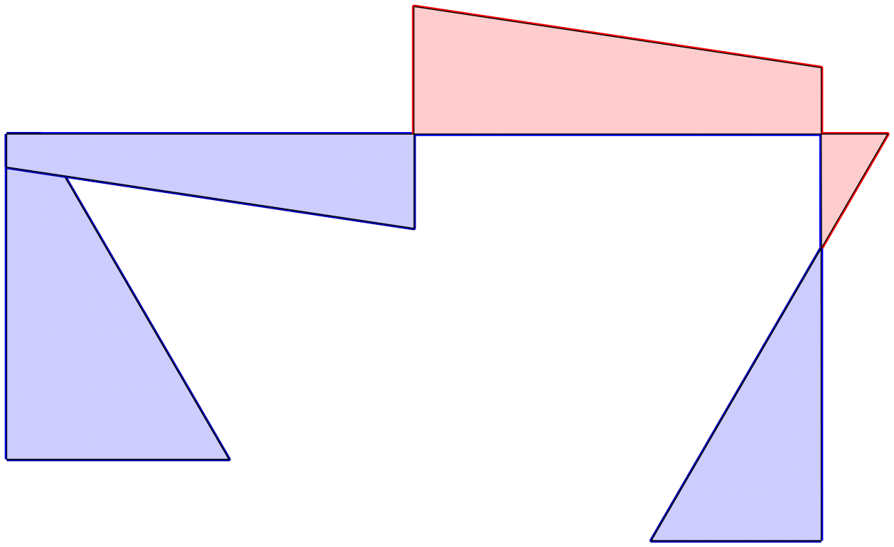
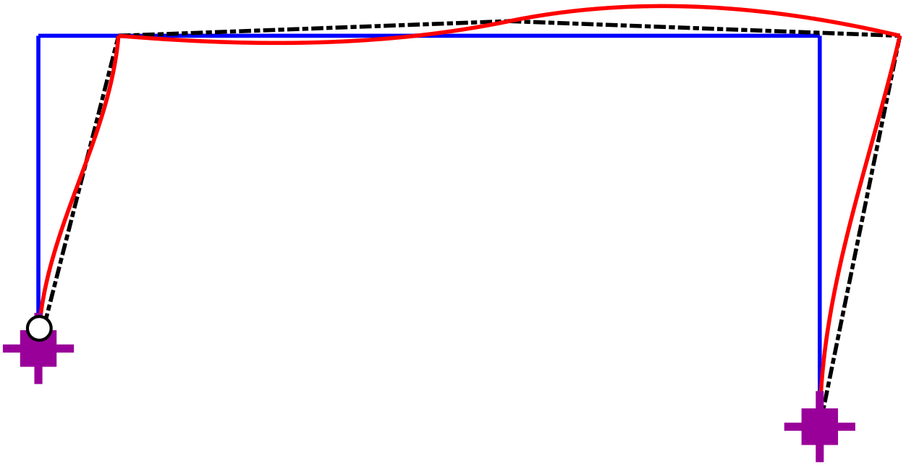

Basic Structural Analysis Functions
FEDEASLab functions implement structural analysis concepts in parallel with their theoretical presentation in the introductory structural analysis course, thus illustrating the generality of the methods and their application to large scale and complex structural models. The intent is not only to reinforce the understanding of the structural response under different types and arrangements of loading, but also to facilitate system and parameter studies.
Function Organization
The structural analysis functions for the introductory course are organized in two folders: Basic and Utilities. The Basic folder contains 20 functions that directly implement the analysis concepts of the course in MATLAB . Many functions in this folder are provided in open source form (.m file format), so that interested readers can relate the implementation details with the theory presented in the course.
| Function name | Input arguments (optional) | Output |
|---|---|---|
| B_matrix | Model |
B |
BbariBbarx_matrix |
Bf, (ind_r) |
Bbari, Bbarx |
| A_matrix | Model |
A |
| Fs_matrix | Model, ElemData, (Roption) |
Fs |
| V0_vector | Model, ElemData, (Roption) |
V0 |
| Ks_matrix | Model, ElemData |
Ks |
| Q0_vector | Model, ElemData |
Q0 |
| Kf_matrix | Model, ElemData |
Kf |
The FEDEASLab functions in the Basic folder can be classified in the following categories:
Functions for Structural Matrices and Vectors: 8. These are listed in Table 1.
Analysis Functions and Scripts: 4. These are listed in Table 2.
Structural Model and Loading Functions: 3. These are listed in Table 4.
Model and Element Utility Functions: 6, namely
Localize,ElmLenOr,Create_PlasticLimitSurface,DefGeom_2dFrm,DeformShape2dFrmandLarge2du2v_Frmwhich are not invoked directly, but are used either by the Model and Loading Functions or by Graphics Utility Functions to be discussed subsequently.
| Script name | Input variables (optional) | Output variables |
|---|---|---|
S_ForceMethod |
Model, ElemData, (Pf), (Pwf) |
Q, Ve, Uf |
S_DisplMethod |
Model, ElemData, (Pf), (Pwf) |
Uf, Q, Ve |
| Function name | Input arguments | Output |
|---|---|---|
PlasticAnalysis_wLBT |
Bf, Qpl, Pref, (Pcf), (Options) |
lambdac, Qc |
PlasticAnalysis_wUBT |
Af, Qpl, Pref, (Pcf), (Options) |
lambdac, DUf, DVhp |
| Function name | Input arguments | Output |
|---|---|---|
| [func:Create_SimpleModel] | XYZ, CON, BOUN, ElemName |
Model |
| [func:Create_NodalForces] | Model, Pe |
Pf |
| [func:Create_PwForces] | Model, ElemData |
Pw |
The folder Utilities contains 28 functions. Almost all functions in this folder are provided in content-obscured form (encoded .p file format), since the implementation details have no bearing on the structural analysis concepts and may only be of interest to readers with programming curiosity and skills. They can be classified in the following categories:
General Utility Functions: 2, namely
CleanStartandPrint_PDFile.Graphics Utility Functions: 13. These are listed in Table 5.
Supporting Functions: 13. These are not invoked directly, but are used by the analysis functions and scripts and by the graphics utility functions. They are not described further in this text, since they are of little interest to the user, but details about input and output arguments may be found in the online help.
| Function name | Input arguments (optional) |
|---|---|
| Create_Window | DX, DY |
| Plot_Model | Model, (Uf) , (Options) |
| Label_Model | Model, (Options) |
| Plot_NodalForces | Model, Pe , (Options) |
| [func:Plot_ElementLoading] | Model, ElemData , (Options) |
| Plot_Releases | Model, (ElemData) , (Uf) , (Options) |
| Plot_AxialForces | Model, Q, (ElemList), (Scale) |
| Label_AxialForces | Model, Q, (ElemList), (Digit), (Units) |
| Plot_2dMomntDistr | Model, (ElemData), Q, (ElemList), (Scale) |
| Label_2dMoments | Model, Q, (ElemList), (Digit), (Units) |
| Plot_2dCurvDistr | Model, ElemData, Q, (ElemList), (Scale) |
| Plot_DeformedStructure | Model, (ElemData), Uf, (Ve), (Options) |
| Plot_PlasticHinges | Model, ElemData, (Uf), Q, (Options) |
The user defines the geometry and properties of the structural model, and then specifies the structural analysis procedure(s) and the graphical post-processing of the results by selecting suitable functions from Table 1-Table 5 in a MATLAB script file, as described in the following sections. Scripting affords extensive flexibility for the response determination and the presentation of the results, but puts the burden on the user to assemble the whole by understanding its parts. This supports the open-ended educational mission of FEDEASLab , as opposed to the black-box nature of commercial analysis software.
The following sections describe the functions in Table 1-Table 5 with examples. The notation for function arguments and local variables agrees with the notation of the course reader, as summarized in Appendix [@B-C:Notation]1. The examples in this chapter correspond to examples of the course reader with the MATLAB scripts for all examples available in the folder Examples of the basic FEDEASLab package.
Data Organization
The initial set of analysis functions for the concepts of an introductory course on structural analysis is built around two data structures: Model for the geometric description of the structural model, and ElemData for the element and material properties and element loading, as is evident from the input argument list of the functions in Table 1-Table 5. The organization of structural model information in two data structures serves to emphasize the concept of the introductory structural analysis course that, under linear conditions, the governing static and kinematic relations depend only on the geometry of the structural model and not on any element properties. Accordingly, the functions B_matrix for setting up the linear equilibrium matrix \(\mathbf{B}\) and A_matrix for setting up the linear kinematic matrix \(\mathbf{A}\) of the structure take as single input argument the data structure Model with model geometry information.
Data Structure Model
In FEDEASLab information about the structural model is collected in the data structure Model , which is set up by the function [func:Create_SimpleModel] from information supplied by the user. The function [func:Create_SimpleModel] is limited to models consisting of 2-node, 2d or 3d truss and frame elements. The function numbers the degrees of freedom (DOFs) of the structure, as discussed in the course reader, thus facilitating their identification for small structural models. With this degree of freedom (DOF) numbering the analysis functions set up full matrices that do not take advantage of the small number of non-zero terms in large structural models. The general model creation function [func:Create_Model] does not have limitations on element type and uses a DOF numbering scheme that minimizes the storage of structure matrices. The use of sparse matrices with minimum storage is essential for the analysis of large structural models with 2d and 3d finite elements.
% clear memory; close open windows
CleanStart
% define model geometry
XYZ(1,:) = [ 0 0];
XYZ(2,:) = [ 8 0];
XYZ(3,:) = [ 16 0];
XYZ(4,:) = [ 8 6];
% element connectivity array
CON(1,:) = [ 1 2];
CON(2,:) = [ 2 3];
CON(3,:) = [ 1 4];
CON(4,:) = [ 2 4];
CON(5,:) = [ 3 4];
% boundary conditions
BOUN(1,:) = [ 1 1];
BOUN(3,:) = [ 0 1];
% specify element type
ne = size(CON,1);
[ElemName{1:ne}] = deal('Truss');Fig. 1 shows the input data for the structure of [B-X:StatDetTruss] in the form of numerical arrays XYZ, BOUN, and CON. The rows of XYZ correspond to the nodes and the \(ndm\) columns to the node coordinates, where \(ndm\) is the dimension of the structural model. The rows of BOUN also correspond to the nodes and the \(ndf\) columns to node restraint switches, where \(ndf\) is the maximum number of DOFs per node for the model. The DOF order for each node is: 1 = force in \(X\), 2 = force in \(Y\), 3 = moment about \(Z\) (for 2d model), or force in \(Z\) (for 3d model), 4,5,6 = moment about \(X\), \(Y\) and \(Z\), respectively (for 3d model). The switch value 0 indicates a free and the value 1 a restrained DOF. CON can be a numerical array for a structural model with only 2-node elements. For finite element models with elements having a different number of nodes, CON needs to be specified as a cell array so that the row contents can vary from element to element. Each row of the numerical CON array contains the node numbers to which the corresponding element connects. Finally, ElemName is a cell array that accommodates element names with a different number of characters. The names 'Truss' and '2dFrm' suffice for tasks that do not require element and material properties. For tasks requiring element and material properties the element names need to be 'LinTruss', 'Lin2dFrm', and 'Lin3dFrm' for the 2d/3d truss, the 2d frame, and the 3d frame element, respectively.
At the start of each input script the command CleanStart issues two MATLAB commands, one for clearing the computer memory of all stored variable values (clearvars), and the second for closing any open figure windows (close all). It may also be expedient to include the call to the function Create_Units at the start of each script, so as to take advantage of the unit definitions in the return argument Units and obviate the need for unit conversion in the values of variables with different units.
The command
Model = Create_SimpleModel(XYZ,CON,BOUN,ElemName)generates the data structure Model . Once Model is created its contents can be displayed by executing disp(Model).
{#lst:ModelCont include="docs/Pages/Basic/Function_Code/Ex2_1a.m .matlab startLine=1 endLine=14 caption=""}
lst. ¿lst:ModelCont? shows the fields and some of their contents for the data structure Model of the truss in Fig. 1: \(nn\) is the number of nodes of the structural model, \(ndm\) the model dimension, XYZ the node coordinate array, \(ne\) the number of elements, CON a cell array of element connectivity with the row number corresponding to the element number (by conversion of the numerical array CON supplied as input argument), \(nq\) the number of basic forces in each element, \(ndf\) the number of local DOFs/node and \(nen\) the number of end nodes of each element, ElemName the cell array of element types, \(nt\) the total number of DOFs, BOUN the array of node restraint switches, \(nf\) the number of free DOFs, and DOF the global DOF numbering array. Typing Model or disp(Model) at the command prompt only shows contents of scalar fields of Model and numeric or cell arrays that can be displayed in a single line, as [B:ModelCont] shows (numeric arrays use [ ] operators and cell arrays use { } operators in MATLAB ). To display the contents of fields of other array types, type the data structure name and the field name separated by a period as input argument to the MATLAB function disp to avoid echoing the variable name:
Model.XYZ for node coordinates
Model.DOF for global DOF numbering
Data Structure ElemData for Element Properties and Loading
ElemData is the second data structure of FEDEASLab after Model . It is specified entirely by the user. Because the element property data vary from element to element, it is necessary to use a cell array for ElemData so that the array contents can vary from element to element. ElemData is a one dimensional cell array with the row number corresponding to the element number. It has the fields in Table 6 with optional fields with default value 0 shown in parentheses.
| Field | Description |
|---|---|
E |
elastic material modulus (scalar) |
A |
cross section area (scalar) |
I |
moment of inertia (scalar) (2d frame only) |
(Release) |
3x1 vector of release codes; 0=continuous, 1=release (2d frame only) |
(w) |
uniform element load, 2x1 vector with \(w_x\) and \(w_y\) (2d frame only) |
(e0) |
non-mechanical effects, 2x1 vector with \(\varepsilon_0\) and \(\kappa_0\) (2d frame only) |
(q0) |
initial prestressing force (scalar) (truss only) |
Np |
plastic axial capacity (scalar) |
Mp |
plastic flexural capacity (scalar) (2d frame only) |
Table 6 shows that ElemData includes a field Np for the plastic axial capacity and a field Mp for the plastic flexural capacity. These are only required for the plastic analysis of large structural models. Otherwise, the plastic capacities of the elements may be directly specified with vector \(\boldsymbol{Q}_{pl}\), as discussed later in this chapter.
function [xyz,id] = Localize (Model,el)XYZ = Model.XYZ; % node coordinates
DOF = Model.DOF; % array with dof numbers for all nodes
CON = Model.CON{el}; % extract connectivity array for element
ndf = Model.ndf(el); % extract no of dofs/node for element
% extract element coordinates into array xyz;
% use CON array to extract appropriate rows of global XYZ array
xyz = XYZ(CON(CON>0),:)';
% extract dof numbers into array id
% use CON array to extract appropriate rows of DOF array
id = DOF(CON(CON>0),1:ndf)';
% reshape id array into vector
id = id(:);function [L,dcx] = ElmLenOr (xyz)% coordinate differences Dx, Dy, Dz depending on problem dimension
Dxyz = xyz (:,2) - xyz(:,1);
% element length
L = sqrt (Dxyz'*Dxyz);
% direction cosines of element orientation
dcx = Dxyz./L;General Utility Functions
Once the geometry and other relevant information about the structural model is collected in data structure Model by the function [func:Create_SimpleModel], information about the geometry and the global DOF correspondence for a particular element can be extracted with the help of two general utility functions: Localize and ElmLenOr. All functions with input arguments Model and ElemData in Table 1 invoke these utility functions for setting up the corresponding structural matrices or vectors.
Function Localize
This function locates the element el in the Model and returns its end node coordinates in array xyz, and the local-global DOF correspondence in vector id. The first column of the two dimensional array xyz contains the coordinates of end \(i\) of the element and the second column those of end \(j\).
Function ElmLenOr
This function returns the element length L and the direction cosines of the element \(x\)-axis in vector dcx from the end node coordinates supplied in array xyz.
Structural Equilibrium
The global DOF equilibrium equations of the structural model are given by [B-E:PBQ]. As discussed in [B-C:Statics], the equilibrium equations at the free DOFs of the structural model in [B-E:GlEqwBfQ] are used to solve for the basic forces \(\boldsymbol{Q}\). For determining the solution of these equations it is necessary to set up the applied nodal forces \(\boldsymbol{P}_f\), the equivalent nodal forces \(\boldsymbol{P}_{wf}\) and the equilibrium matrix \(\mathbf{B}_f\). The latter is extracted from the full equilibrium matrix \(\mathbf{B}\).
Assembly of Equilibrium Matrix \(\mathbf{B}\)
The assembly of the equilibrium matrix \(\mathbf{B}\) of the structural model in [B-S:BfAssembly] involves the determination of the equilibrium matrix \(\mathbf{b}_g\) of each element and the re-assignment of the rows of \(\mathbf{b}_g\) to the rows of \(\mathbf{B}\) based on the local-global DOF number correspondence in accordance with the \(\boldsymbol{id}\) array of the element. Setting up the equilibrium matrix \(\mathbf{b}_g\) of each element according to [B-E:bg42dfr], [B-E:bg42dtr] or [B-E:bg43dtr] for a 2d frame, a 2d truss and a 3d truss element, respectively, requires the element length \(L\) and the direction cosines of the undeformed element \(x\)-axis. These are set up by the utility function ElmLenOr in conjunction with the utility function Localize, which also sets up the \(\boldsymbol{id}\) array for the element, as described earlier.
The assembly of the \(\mathbf{B}\) matrix according to [B-E:Belbg] is implemented in FEDEASLab function B_matrix , as shown in lst. 1. The function B_matrix calls the internal function bg_matrix to set up the equilibrium matrix \(\mathbf{b}_g\) of each element according to [B-E:bg42dfr], [B-E:bg42dtr] or [B-E:bg43dtr] for a 2d frame, a 2d truss and a 3d truss element, respectively. The function syntax is given in [B:bgimpl].
Because the data structure Model does not have information about basic force releases, it is the user’s responsibility to remove the columns of the \(\mathbf{B}\)-matrix corresponding to basic force releases so that the difference between the number of columns and the number of rows of the \(\mathbf{B}\)-matrix matches the degree of static indeterminacy NOS of the structural model. A convenient way for setting up an index of element release locations is furnished by the utility function [func:H_index] with information about the element releases in ElemData , as will be discussed later.
After setting up the complete equilibrium matrix \(\mathbf{B}\) for the structural model, the equilibrium matrix \(\mathbf{B}_f\) for the free DOFs corresponds to the upper \(nf\) rows of \(\mathbf{B}\). It can be extracted with the statement
Listing 1:
function B = B_matrix (Model)% assemble structure equilibrium matrix
ne = Model.ne; % number of elements in structural model
k = 0; % initialize column index into matrix B
for el=1:ne % loop over all elements
% locate element in Model and return end coordinates and id array
[xyz,id] = Localize(Model,el);
% form element equilibrium matrix bg
bg = bg_matrix(Model.ElemName{el},xyz);
% assemble element equilibrium matrix bg into static matrix B
nc = size(bg,2); % determine number of columns of matrix bg
B(id,k+1:k+nc) = bg; % insert bg into id locations of matrix B
k = k+nc; % augment column index by number of columns
endfunction bg = bg_matrix(ElemName,xyz)% determine element length and orientation
[L,dcx] = ElmLenOr(xyz);
if contains(ElemName,'Truss')
% truss element
bg = [-dcx; dcx];
elseif contains(ElemName,'2dFrm')
% 2d frame element
dXL = dcx(1);
dYL = dcx(2);
bg = [-dXL -dYL/L -dYL/L;
-dYL dXL/L dXL/L;
0 1 0 ;
dXL dYL/L dYL/L;
dYL -dXL/L -dXL/L;
0 0 1 ];
else
error ('only truss and 2d frame elements supported; check syntax')
endSpecification of Nodal Forces
%% specify loading
Pe(2,2) = -5; % node 2, direction Y
Pe(4,1) = 10; % node 4, direction X
% generate applied force vector PfThe next task for setting up the node equilibrium equations of the structural model is the specification of the applied and the equivalent nodal forces. For this task it is impractical to know the global DOF numbering for directly setting up the applied and the equivalent nodal force vectors \(\boldsymbol{P}_f\) and \(\boldsymbol{P}_{wf}\) at the free DOFs, respectively. Instead, it is convenient to specify the nodal forces in a two dimensional array Pe with row numbers corresponding to node numbers and column numbers corresponding to DOF numbers, where 1 = force in \(X\), 2 = force in \(Y\), 3 = moment about \(Z\) (for 2d model), or force in \(Z\) (for 3d model), 4,5,6 = moment about \(X\), \(Y\) and \(Z\), respectively (for 3d model). With the global DOF numbering available in the data structure Model , the FEDEASLab function [func:Create_NodalForces] in Table 4] sets-up the nodal force vector. The input arguments to the function are the data structure Model and the two dimensional nodal force array Pe, while the output argument is the nodal force vector Pf. Fig. 2 shows the syntax for the applied nodal forces of the truss from [B-X:StatDetTruss]. The equivalent nodal forces \(\boldsymbol{P}_w\) are set up by the function Create_PwForces in Table 4 for the element loading \(w\) specified in data structure ElemData according to Table 6.
Solution for Statically Determinate Structures
For a stable, statically determinate structure the equilibrium matrix \(\mathbf{B}_f\) is square with full rank. The MATLAB function rank can be used to make sure that this is indeed the case. Given the nodal forces \(\boldsymbol{P}_f\) and \(\boldsymbol{P}_{wf}\) at the free DOFs of a stable structural model, a unique solution of the system of linear equations in [B-E:GlEqwBfQ] exists, resulting in the basic forces \(\boldsymbol{Q}\) of the structure. The product of the basic forces \(\boldsymbol{Q}\) with the full equilibrium matrix \(\mathbf{B}\) gives the complete nodal force vector \(\boldsymbol{P}\) according to [B-E:PBQ]. The entries in the upper \(nf\) rows of \(\boldsymbol{P}\) correspond to the nodal forces \(\boldsymbol{P}_f-\boldsymbol{P}_{wf}\), and the entries in the remaining rows correspond to the support reactions \(\boldsymbol{R}\) according to [B-E:PfRBQ].
lst. 2 shows an excerpt from a MATLAB script file that follows the generation of Model in Fig. 1 and of the applied nodal force vector \(\boldsymbol{P}_f\) in Fig. 2. The script shows the determination of the equilibrium matrix \(\mathbf{B}\) with function B_matrix and its display, the solution of the equilibrium equations in [B-E:GlEqwBfQ] with the MATLAB \(\backslash\) command, and the resulting basic forces \(\boldsymbol{Q}\). The basic forces \(\boldsymbol{Q}\) are then used to determine the support reactions \(\boldsymbol{R}\) after first multiplying these with the full equilibrium matrix \(\mathbf{B}\) and then extracting the rows corresponding to the restrained DOFs.
Listing 2:
Solution for Statically Indeterminate Structures
The general solution of the equilibrium equations in [B-E:GlEqwBfQ] for a equilibrium matrix \(\mathbf{B}_f\) with full rank and with more columns than rows uses the row-echelon form of the matrix. Conversion of a matrix to row-echelon form uses the Gauss-Jordan elimination procedure. This well established procedure of linear algebra is implemented in the function rref of MATLAB . It can be used to establish the rank of \(\mathbf{B}_f\) and provide the particular and the homogeneous solutions of the equilibrium equations according to [B-S:Sol4SIStr].
Following [B-S:Sol4SIStr] the general solution of the equilibrium equations in [B-E:Qfinal] is based on the basic force influence matrix \(\bar{\mathbf{B}}_i\) of the primary structure for the applied and equivalent nodal forces, and the basic force influence matrix \(\bar{\mathbf{B}}_x\) for the redundant basic forces \(\boldsymbol{Q}_x\). FEDEASLab function BbariBbarx_matrix takes the equilibrium matrix \(\mathbf{B}_f\) as input argument and uses its reduced-row echelon form to set up the force influence matrices \(\bar{\mathbf{B}}_i\) and \(\bar{\mathbf{B}}_x\). The optional function argument ind_r can be used to select specific basic forces as redundants. If ind_r is not specified, the Gauss-Jordan elimination process selects the redundant basic forces automatically, and the function BbariBbarx_matrix returns the index array ind_x to the basic force vector \(\boldsymbol{Q}\), so that the redundant basic forces \(\boldsymbol{Q}_x\) can be extracted with Qx = Q(ind_x). The function syntax is
function [Bbari, Bbarx, ind x] = BbariBbarx matrix ( Bf, ind r)Listing 3:
%% Matlab script for force influence matrix generation
% Department of Civil and Environmental Engineering
% University of California, Berkeley
% Professor Filip C. Filippou
% clear memory
CleanStart
% static matrix Bf of braced frame (Ex 2.7)
Bf = [ 1/6 1/6 0 0 0 0.8;
0 1 1 0 0 0 ;
0 0 -1/4 -1/4 1/4 0 ;
0 0 0 1 1 0 ];% select basic force redundants
ind_r = [1,4];
[Bbari,Bbarx,ind_x] = BbariBbarx_matrix(Bf,ind_r);
Pf = [20;0;-30;0];
Qp = Bbari*Pf;%% Matlab script for force influence matrix generation
% Department of Civil and Environmental Engineering
% University of California, Berkeley
% Professor Filip C. Filippou
% clear memory
CleanStart
% static matrix Bf of braced frame (Ex 2.7)
Bf = [ 1/6 1/6 0 0 0 0.8;
0 1 1 0 0 0 ;
0 0 -1/4 -1/4 1/4 0 ;
0 0 0 1 1 0 ];
% select basic force redundants
ind_r = [1,4];lst. 3 shows the direct specification of the \(\mathbf{B}_f\) matrix for the braced frame of [B-X:SIBrFrm] that corresponds to the equilibrium equations in [B-E:EqEqs4brfr]. The function BbariBbarx_matrix then determines the force influence matrices \(\bar{\mathbf{B}}_i\) and \(\bar{\mathbf{B}}_x\) for the selection of \(\boldsymbol{Q}_1\) and \(\boldsymbol{Q}_4\) as redundant basic forces, as specified by ind_r=[1,4]. With the direct specification of the nodal force vector \(\boldsymbol{P}_f\) the particular solution for the given nodal forces can be determined by the product \(\bar{\mathbf{B}}_i\mspace{1.5mu}\boldsymbol{P}_f\). The resulting values agree with those from B-X:SIBrFrm and (c).
Structural Kinematics
The structural kinematic relations in [B-E:VAfUf] relate the element deformations \(\boldsymbol{V}\) to the free global DOF displacements \(\boldsymbol{U}_f\) through the kinematic matrix \(\mathbf{A}_f\) of the structure. With a given set of compatible element deformations \(\boldsymbol{V}\) the solution of the kinematic relations in [B-E:VAfUf] gives the values of the free DOF displacements \(\boldsymbol{U}_f\). This approach to the determination of the free DOF displacements is of particular interest for statically determinate structures, for which the number of element deformations is equal to the number of unknown free DOF displacements, so that the element deformations are not constrained by compatibility conditions, as the examples of [B-C:Kinematics] demonstrate.
Assembly of Kinematic Matrix \(\mathbf{A}\)
Because \(\mathbf{A}_f^T=\mathbf{B}_f\) according to the principle of virtual work, it is not necessary to create separate functions for setting up the equilibrium matrix \(\mathbf{B}\) and the kinematic matrix \(\mathbf{A}\). Nonetheless, FEDEASLab has two separate functions in the interest of completeness.
The assembly of the kinematic matrix \(\mathbf{A}\) is completely analogous to that of the equilibrium matrix \(\mathbf{B}\) and the corresponding functions practically identical. Nonetheless, a brief description of the process is given in the following.
The assembly of the kinematic matrix \(\mathbf{A}\) of the structural model in [B-S:AfAssembly] involves the determination of the kinematic matrix \(\mathbf{a}_g\) of each element and the re-assignment of the columns of \(\mathbf{a}_g\) to the columns of \(\mathbf{A}\) based on the local-global DOF number correspondence in accordance with the \(\boldsymbol{id}\) array of the element. The kinematic matrix \(\mathbf{a}_g\) of each element is set up according to [B-E:vagu], [B-E:v2dtruss], or [B-E:v3dtruss] for 2d frame, 2d truss and 3d truss, respectively, and requires the element length \(L\) and the \(x\)-axis orientation in the form of the direction cosines, as discussed for the equilibrium matrix \(\mathbf{b}_g\) in sec. 5.1.
Listing 4:
function A = A_matrix (Model)ne = Model.ne; % number of elements in structural model
k = 0; % initialize row index into matrix A
for el=1:ne % loop over all elements
% locate element in Model and return end coordinates and id array
[xyz,id] = Localize(Model,el);
% form element compatibility matrix ag
ag = ag_matrix(Model.ElemName{el},xyz);
% assemble element compatibility matrix ag into structure matrix A
nc = size(ag,1); % number of rows of matrix ag
A(k+1:k+nc,id) = ag; % insert ag into location of matrix A
k = k+nc; % augment row index by number of rows in ag
endListing 5: .
function ag = ag_matrix(ElemName,xyz)% determine element length and orientation
[L,dcx] = ElmLenOr(xyz);
if contains(ElemName,'Truss')
% truss element
ag = [-dcx' dcx'];
elseif contains(ElemName,'2dFrm')
% 2d frame element
dXL = dcx(1);
dYL = dcx(2);
ag = [-dXL -dYL 0 dXL dYL 0;
-dYL/L dXL/L 1 dYL/L -dXL/L 0;
-dYL/L dXL/L 0 dYL/L -dXL/L 1];
else
error ('only truss and 2d frame elements supported')
endlst. 4 gives the syntax for function A_matrix . The function A_matrix calls the internal function ag_matrix to set up the kinematic matrix \(\mathbf{a}_g\) of each element according to [B-E:vagu], [B-E:v2dtruss], or [B-E:v3dtruss] for 2d frame, 2d truss and 3d truss, respectively. The function syntax is given in lst. 5.
Because the data structure Model does not have information about basic force releases, it is the user’s responsibility to remove the rows of the \(\mathbf{A}\)-matrix corresponding to element ends with release deformations \(\boldsymbol{V}_h\). After setting up the complete kinematic matrix \(\mathbf{A}\) for the structural model, the kinematic matrix \(\mathbf{A}_f\) for the free DOFs corresponds to the first \(nf\) columns of \(\mathbf{A}\). For a stable, statically determinate structure the kinematic matrix \(\mathbf{A}_f\) is square with full rank. Given the element deformations \(\boldsymbol{V}\), a unique solution of the system of linear equations in [B-E:VAfUf] exists, resulting in the displacements \(\boldsymbol{U}_f\) at the free DOFs of the structural model.
The excerpt from a MATLAB script file in lst. 6 follows the input data for the plane truss of [B-X:KinDetTruss] and the command Create_SimpleModel. The element deformation vector V0 is populated with zeroes. It has size equal to the total number of basic forces sum(Model.nq) for this model which does not have element releases. After specifying the non-zero values of the element deformations the solution of the kinematic relations in [B-E:VAfUf] gives the free DOF displacements Uf. The values are identical with those of [B-X:KinDetTruss] with the corresponding deformed shape in [B-F:KineTrEx2F8].
Listing 6: Determination of the free DOF displacements for the truss of @B-X:KinDetTruss
Force-Deformation Relations for Linear Material Response
[B-C:ForceDef] establishes the deformation-force relations of the truss element in [B-E:vq4truss] and of the 2d frame element in [B-E:vq4frm]. The collection of these relations for all elements of the structural model results in the structure deformation-force relations in [B-E:VepsQ]. Consequently, the collection of the element flexibility matrices \(\mathbf{f}\) to form the matrix \(\mathbf{F}_s\) and the collection of the initial element deformation vectors \(\boldsymbol{v}_0\) to form the vector \(\boldsymbol{V}_{0}\) depends on setting up \(\mathbf{f}\) and \(\boldsymbol{v}_0\) for all elements of the structural model. The latter depend on the material properties and the loading of each element which are supplied in ElemData according to the information in Table 6.
Force-Deformation Functions
With the element property and loading information in ElemData , the FEDEASLab function Fs_matrix collects the element flexibility matrices into the block-diagonal matrix \(\mathbf{F}_s\) according to [B-E:VepsQ]. Similarly, the function V0_vector collects the initial element deformations into vector \(\boldsymbol{V}_{0}\).
Listing 7:
function Fs = Fs_matrix (Model,ElemData,Roption)ne = Model.ne;
f = cell(ne,1);
% loop over all elements in structural model
for el = 1:ne
% locate element in Model and return end coordinates xyz
xyz = Localize(Model,el);
% determine element length from end coordinates
L = ElmLenOr(xyz);
% set up element flexibility matrix
f{el} = f_matrix (Model.ElemName{el},ElemData{el},L,Roption);
end
% block-diagonal array of element flexibility matrices
Fs = blkdiag (f{:});function f = f_matrix (ElemName,ElemData,L,Roption)E = ElemData.E; % elastic modulus
A = ElemData.A; % area
EA = E*A; % axial stiffness
switch ElemName
case 'LinTruss'
% linear truss element
f = L/EA;
case 'Lin2dFrm'
% 2d linear frame element
I = ElemData.I;
EI = E*I;
f = [L/EA 0 0 ;
0 L/(3*EI) -L/(6*EI) ;
0 -L/(6*EI) L/(3*EI)];
% extract necessary submatrix in the presence of release(s)
ide = 1:3;
if Roption && isfield(ElemData,'Release')
idr = find(ElemData.Release);
ide = setdiff(ide,idr);
end
f = f(ide,ide);
otherwise
error ('only linear truss and 2d frame elements supported')
endThe syntax of function Fs_matrix is shown in lst. 7 2. The function Fs_matrix calls the internal function f_matrix to set up the flexibility matrix \(\mathbf{f}\) for each element according to [B-E:vq4frm] with the flexibility matrices for the truss element in [B-E:fatruss] and for the 2d frame element in [B-E:fb4planebeam]. The function syntax is given in lst. ¿lst:fimpl?. The function V0_vector has similar syntax and is not listed here.
According to [B-S:qv], the element force-deformation relations are established as the inverse of the deformation-force relations of the element with the basic element stiffness matrix \(\mathbf{k}\) equal to the inverse of the element flexibility matrix \(\mathbf{f}\) and the initial force vector \(\boldsymbol{q}_0\) according to [B-E:qvgen].
function Ks = Ks_matrix (Model,ElemData)ne = Model.ne;
k = cell(ne,1);
for el = 1:ne
% locate element in Model and return end coordinates xyz
xyz = Localize(Model,el);
% determine element length from end coordinates
L = ElmLenOr(xyz);
% set up element stiffness matrix
k{el} = k_matrix (Model.ElemName{el},ElemData{el},L);
end
% block-diagonal array of element stiffness matrices
Ks = blkdiag (k{:});function k = k_matrix (ElemName,ElemData,L)E = ElemData.E; % elastic modulus
A = ElemData.A; % area
EA = E*A; % axial stiffness
switch ElemName
case 'LinTruss'
% linear truss element
k = EA/L;
case 'Lin2dFrm'
% 2d linear frame element
I = ElemData.I;
EI = E*I;
f = [L/EA 0 0 ;
0 L/(3*EI) -L/(6*EI) ;
0 -L/(6*EI) L/(3*EI)];
% extract necessary submatrix in the presence of release(s)
ide = 1:3;
if isfield(ElemData,'Release')
idr = find(ElemData.Release);
ide = setdiff(ide,idr);
end
f = f(ide,ide);
% invert element flexibility to get basic element stiffness
k = inv(f);
otherwise
error ('only linear truss and 2d frame elements supported')
endfunction q0 = q0_vector (ElemName,ElemData,L)E = ElemData.E; % elastic modulus
A = ElemData.A; % area
EA = E*A; % axial stiffness
switch ElemName
case 'LinTruss'
% linear truss element
if ~isfield(ElemData,'e0'), ElemData.e0 = 0; end
if ~isfield(ElemData,'q0'), ElemData.q0 = 0; end
e0 = ElemData.e0; % initial axial strain
q0 = ElemData.q0; % initial prestressing force
q0 = q0 - EA*e0; % fixed-end force vector
case 'Lin2dFrm'
% 2d linear frame element
I = ElemData.I;
EI = E*I;
if ~isfield(ElemData,'e0'), ElemData.e0 = [0;0]; end
if ~isfield(ElemData,'w'), ElemData.w = [0;0]; end
e0 = ElemData.e0; % initial section deformations
w = ElemData.w; % uniformly element load in x and y
% 2d linear frame element
v0 = [e0(1)*L; -e0(2)*L/2 ; e0(2)*L/2];
v0 = v0 + [w(1)*L*L/(2*EA) ; w(2)*L^3/(24*EI) ; -w(2)*L^3/(24*EI)];
% flexibility matrix
f = [L/EA 0 0 ;
0 L/(3*EI) -L/(6*EI) ;
0 -L/(6*EI) L/(3*EI)];
% index of continuous element deformations
ide = 1:3;
if isfield(ElemData,'Release')
idr = find(ElemData.Release);
ide = setdiff(ide,idr);
end
v0 = v0(ide);
f = f(ide,ide);
q0 = -f\v0;
otherwise
error ('only linear truss and 2d frame elements supported')
endFEDEASLab function Ks_matrix collects the basic element stiffness matrices into the block-diagonal matrix \(\mathbf{K}_s\) according to [B-E:Ks]. Similarly, the function Q0_vector collects the initial element forces into vector \(\boldsymbol{Q}_{\raisebox{-1pt}{\scriptstyle{0}}}\).
The function Ks_matrix calls the internal function k_matrix to set up the stiffness matrix \(\mathbf{k}\) for each element according to [B-E:qvgen] with the stiffness for the truss element in [B-E:ka] and the stiffness matrix of the 2d frame element in [B-E:kb] or [B-E:kb4beamwr] depending on the presence of an end moment release. The syntax of function Ks_matrix is shown in [B:Ksmatimpl], while the syntax for the internal function k_matrix is given in [B:kimpl].
The syntax of function Q0_vector is very similar except for the collection of vectors instead of matrices. The function calls the internal function q0_vector with the function syntax in [B:q0impl] to set up the initial force vector \(\boldsymbol{q}_0\) of each element according to [B-E:q01], [B-E:q04beam] and [B-E:q04beamwr].
Force Method of Analysis
The steps of the force method of analysis are summarized in [B-T:FMsteps]. This step sequence is implemented in the MATLAB script file S_ForceMethod.
In contrast to a function, a script file operates on the variables in the workspace memory and stores its output also in the workspace memory. FEDEASLab makes use of script files for two purposes:
to define several variables at once and place them in the workspace for easy access or to issue a few simple MATLAB commands with a single call rather than individually;
to collect a series of commands involving FEDEASLab functions into solution procedures that can be invoked with a single call from the workspace; such scripts are identified with prefix
S_and can be easily modified to suit individual needs. The limitation of such a script, however, is that variables serving as input arguments to the functions in the script should be present in the workspace with the same syntax as the function arguments in the script.
All script variables reside in the MATLAB workspace and are, therefore, of global character. Such variables may lead to name conflicts, if care is not exercised. In contrast, variables in functions are local and can only be accessed if they appear in the input or output argument list. Clearly, this is the preferred approach for data protection in a modular computing environment. For this reason, scripts are used sparingly in FEDEASLab.
Listing 8:
% form static matrix B for all dofs
B = B_matrix (Model);
% get element cell array for continuous element deformations
iced = H_index (Model,ElemData);
% concatenate indices to single index vector ic
ic = [iced{:}];
% form Bf matrix without columns corresponding to releases
Bf = B(1:Model.nf,ic);
% determine force influence matrices Bbari, Bbarx
if ~exist('ind_r','var'), ind_r = []; end
[Bbari,Bbarx] = ForceInfl_matrix (Bf,ind_r);
% set up Fs matrix and V0 vector
Fs = Fs_matrix (Model,ElemData);
V0 = V0_vector (Model,ElemData);% determine redundant basic forces
Qp = Bbari*(Pf-Pwf);
Fxx = Bbarx'*Fs*Bbarx;
Qx = -Fxx\(Bbarx'*(Fs*Qp+V0));
% determine final basic forces
Q = Qp + Bbarx*Qx;
% determine element deformations Veps (Ve for short)
Ve = Fs*Q + V0;
% determine free dof displacements
Uf = Bbari'*Ve;
% complete Q vector with release values and return Ve
[Q,Ve] = Complete_QV(Model,ElemData,Q);The script S_ForceMethod depends on the definition of the structural model geometry in the data structure Model , and on the specification of the element property and loading information in the data structure ElemData . The specification of an index ind_r for the redundant basic forces is optional, as is the specification of the nodal forces Pf and Pwf. The default value for the nodal forces is zero.
The command sequence for the implementation of the force method of analysis according to [B-T:FMsteps] is divided in two parts in [B:FMsteps]:
- the setting up of the necessary matrices \(\mathbf{B}\), \(\bar{\mathbf{B}}_i\), \(\bar{\mathbf{B}}_x\), \(\mathbf{F}_s\) and the vector \(\boldsymbol{V}_{\scriptstyle{0}}\) from information in Model and
ElemData, and (b) the solution steps of the force method. The script generates the basic forces \(\boldsymbol{Q}\) of the structural model, the corresponding element deformations \(\boldsymbol{V}_{\varepsilon}\), and the free DOF displacements \(\boldsymbol{U}_f\). These can be used for response interpretation, as will be discussed in sec. 12.
The script S_ForceMethod uses two auxiliary functions: (a) [func:H_index] to set up a cell array of indices for continuous element deformations from information in the field Release of ElemData , and (b) Complete_QV which uses the same information to pad the basic forces \(\boldsymbol{Q}\) from the force method of analysis with zero values at the releases, so that it can determine the element deformations \(\boldsymbol{V}_{\varepsilon}\) at the ends with flexural releases and plot the deformed shape of the corresponding element, if required.
Displacement Method of Analysis
The steps of the displacement method of analysis are described in [B-S:KfP0] and [B-S:DMsol]. A summary of these steps for implementation in FEDEASLab is:
With the kinematic matrix \(\mathbf{A}_f\) set up the stiffness matrix \(\mathbf{K}_f\) and the initial force vector \(\boldsymbol{P}_{0}\) \[ \mathbf{K}_f= \mathbf{A}_f^T\mspace{1.5mu}\mathbf{K}_s\mspace{1.5mu}\mathbf{A}_f \quad \quad \boldsymbol{P}_{0}= \mathbf{A}_f^T\mspace{1.5mu}\boldsymbol{Q}_{0}+ \boldsymbol{P}_{wf} \]
Solve the equilibrium equations for the free DOF displacements \(\boldsymbol{U}_f\) \[\boxed{ \boldsymbol{P}_f= \mathbf{K}_f\mspace{1.5mu}\boldsymbol{U}_f+ \boldsymbol{P}_{0}}\]
Determine the element deformations \(\boldsymbol{V}\) from the kinematic relations \[\boxed{ \boldsymbol{V}= \mathbf{A}_f\mspace{1.5mu}\boldsymbol{U}_f}\]
Determine the basic forces \(\boldsymbol{Q}\) from the collection of element force-deformation relations \[\boxed{ \boldsymbol{Q}= \mathbf{K}_s\mspace{1.5mu}\boldsymbol{V}+ \boldsymbol{Q}_{0}}\]
[B:DMsteps] shows the implementation of these steps in the MATLAB script file S_DisplMethod.
Listing 9:
% form kinematic matrix A for all dofs
A = A_matrix (Model);
% get element cell array for continuous element deformations
iced = H_index (Model,ElemData);
% concatenate indices to single index vector ic
ic = [iced{:}];
% form Af matrix for free dofs without rows with release deformations
Af = A(ic,1:Model.nf);
% set up Ks matrix and Q0 vector
Ks = Ks_matrix (Model,ElemData);
Q0 = Q0_vector (Model,ElemData);% set up stiffness matrix Kf and initial force vector P0
Kf = Af'*Ks*Af;
P0 = Pwf + Af'*Q0;
% solve equilibrium equations for free dof displacements Uf
Uf = Kf\(Pf-P0);
% determine continuous element deformations V
V = Af*Uf;
% determine basic forces Q
Q = Ks*V + Q0;
% complete Q vector with release values and return Ve
[Q,Ve] = Complete_QV(Model,ElemData,Q);As is the case with the script for the force method of analysis, the script S_DisplMethod depends on the definition of the structural model geometry in the data structure Model , and on the specification of the element property and loading information in the data structure ElemData . The specification of the nodal forces Pf and Pwf is optional with default values equal to zero. The script uses the same auxiliary functions as the script for the force method to remove the rows of the kinematic matrix \(\mathbf{A}\) with release deformations and pad the vector of basic forces \(\boldsymbol{Q}\) from the displacement method of analysis with zero values at the releases, so that it can determine the element deformations \(\boldsymbol{V}_{\varepsilon}\) at the element ends with flexural releases and plot the deformed shape of the corresponding element, if required.
Direct Stiffness Assembly
[B-S:DStiffImpl] demonstrates the significant advantage of the displacement method over the force method of analysis: the direct assembly of the structure stiffness matrix \(\mathbf{K}_f\) and the resisting forces \(\boldsymbol{P}_{r}\). We demonstrate briefly the ease of implementing the direct stiffness assembly in FEDEASLab by taking advantage of the array indexing capabilities of MATLAB described in Appendix [C:ArrayIndx] and avoiding the multiplication by the Boolean array in [B-E:Khat]. The latter approach is symbolically compact but computationally inefficient, because the Boolean matrix \(\mathbf{A}_b^{(el)}\) in [B-E:Khat] contains only a few terms of unit value but mostly zeros.
In the direct assembly process the element \(\boldsymbol{id}\) array serves as index of the element stiffness coefficients into the structure stiffness matrix \(\breve{\mathbf{K}}\). The FEDEASLab function Kf_matrix.m assembles the complete stiffness matrix \(\breve{\mathbf{K}}\) and then extracts the stiffness \(\mathbf{K}\) at the free dofs (in practice only the free dof stiffness \(\mathbf{K}\) is assembled to save storage).
Listing 10:
function Kf = Kf_matrix (Model,ElemData)K = zeros(nt,nt);
for el=1:ne
% locate element in Model and return end coordinates and id array
[xyz,id] = Localize(Model,el);
% form element stiffness matrix ke in global reference system
ke = ke_matrix(Model.ElemName{el},ElemData{el},xyz);
% assemble element stiffness matrix ke into structure matrix K
K (id,id) = K (id,id) + ke;
end
Kf = K(1:nf,1:nf); % extract stiffness matrix of free dof'slst. 10 shows the function excerpt with the operations of direct stiffness assembly. K corresponds to \(\breve{\mathbf{K}}\) and Kf corresponds to \(\mathbf{K}\) in the code. The function Kf_matrix.m calls each element by its name, as specified in the field ElemName of Model, gives it its end coordinates and element properties and expects its stiffness matrix in global coordinates as return argument. This operation should be implemented in a separate function for each element, so that new elements can be added with ease. Because we plan to pursue a different implementation in FEDEASLab as will be discussed in the course of Nonlinear Analysis, we include only the truss and the 2d frame element stiffness determination in a subfunction ke_matrix of Kf_matrix.m.
[B-E:kepo] gives the element stiffness matrix of the truss and the 2d frame element in global coordinates. The MATLAB commands are excerpted in lst. ¿lst:kaImpl? noting that the stiffness determination of the 2d frame element with basic force releases follows the description in [B-S:DStiffwvh].
Listing 11:
% determine element length and orientation (direction cosines of x-axis)
[L,dcx] = ElmLenOr(xyz);
% extract element properties from ElemData
E = ElemData.E;
A = ElemData.A;
EA = E * A;
switch ElemName
case 'LinTruss'
% linear truss element
% transformation matrix from basic to global
ag = [-dcx' dcx'];
k = EA/L;
ke = ag'*k*ag;
case 'Lin2dFrm'
% 2d linear frame element with or w/o release
% transformation matrix from basic to global
dXL = dcx(1); dYL = dcx(2);
ag = [-dXL -dYL 0 dXL dYL 0;
-dYL/L dXL/L 1 dYL/L -dXL/L 0;
-dYL/L dXL/L 0 dYL/L -dXL/L 1];
I = ElemData.I;
EI = E * I;
k = [ EA/L 0 0;
0 4*EI/L 2*EI/L;
0 2*EI/L 4*EI/L];
% introduce release indices MR
MR = zeros(3,1);
if isfield(ElemData,'Release'), MR(ElemData.Release==1) = 1; end
% compatibility matrix in the presence of moment release(s)
ah = [ 1-MR(1) 0 0;
0 1-MR(2) -0.5*(1-MR(3))*MR(2);
0 -0.5*(1-MR(2))*MR(3) 1-MR(3) ];
% transform basic stiffness matrix for release(s)
k = ah'*k*ah;
% transform basic stiffness to global reference
ke = ag'*k*ag;Plastic Analysis
According to [B-C:PlAnal] the determination of the collapse load factor of a structural model is possible either with the lower bound theorem of plastic analysis that makes use of the equilibrium equations and the plastic conditions, or with the upper bound theorem of plastic analysis that makes use of the kinematic relations and the plastic work increment of structural mechanisms. Even though the uniqueness theorem of plastic analysis states that the collapse load factor is the same with these methods, FEDEASLab uses two separate functions to better illustrate the resulting information from each method, which is of equilibrium nature for the lower bound theorem and of kinematic nature for the upper bound theorem. The basic forces at incipient collapse from the lower bound theorem can be used to display the moment distribution at incipient collapse, while the displacement and deformation increments from the upper bound theorem can be used to display the mechanism after the onset of collapse.
Lower Bound Theorem
The formulation of the lower bound theorem of plastic analysis in [B-E:LBeq] of [B-C:PlAnal] is a linear programming problem. Functions for the solution of such problems are available in the Optimization toolbox of MATLAB . In particular, the linprog function of the toolbox is suited for structural problems involving linear equalities and inequalities. To set up the input arguments for this function the FEDEASLab function takes the equilibrium matrix Bf, the array of plastic capacities Qpl, and the reference force vector Pref at the free DOFs of the structural model as input arguments. The latter is set up directly or with the help of the function [func:Create_NodalForces] , as discussed in sec. 5.2. Optional input arguments to the function are the constant nodal forces \(\boldsymbol{P}_{cf}\) and the data structure Options with parameters for the linear programming solution. The default value for the constant nodal forces is zero, while the default parameters for the linear programming function that MATLAB selects work in most cases. They need to be modified only if numerical difficulties arise.
With this information the function determines the collapse load factor lambdac and the corresponding basic forces Qc of the structure under the collapse load. The syntax of the plastic analysis function is
[B:PlAnal] shows the input arguments to for the column-girder assembly of [B-X:PlAColGird]. The output arguments are the collapse load factor lambdac and the corresponding basic forces Qc of the structural model under the collapse load.
Upper Bound Theorem
The formulation of the upper bound theorem of plastic analysis in [B-E:LP4UB], [B-E:LP4UBINC], and [B-E:LPUBEQC] of [B-C:PlAnal] is also a linear programming problem, in fact it is the dual problem of the lower bound theorem in [B-E:LBeq] [@Strang_1988].
The FEDEASLab function [func:PlasticAnalysis_wUBT] sets up the necessary equality and inequality constraints with input arguments \(\mathbf{A}_f\), \(\boldsymbol{Q}_{pl}\), \(\boldsymbol{P}_{ref}\). It invokes the simplex algorithm for the solution of the linear programming problem and returns the collapse load factor \(\lambda_c\), and the displacement rates \(\dot{\boldsymbol{U}}_f\) as displacement increments DUf and the plastic hinge deformation rates \(\dot{\boldsymbol{V}}_{hp}\) as plastic deformation increments DVhp of the collapse mechanism. The syntax is
[B:UB4PorFr] shows the input arguments to PlasticAnalysis_wUBT for the portal frame of [B-X:PlUB4PortalFrame]. The function output consists of the collapse load factor lambdac, the corresponding displacement increments DUf, and the plastic hinge deformation increments DVhp of the collapse mechanism. The values match those from [B-X:PlUB4PortalFrame].
Graphics Utility Functions
FEDEASLab has functions for displaying on the computer screen the geometry of the model and the results of the analysis in the form of internal force distributions, deformed shape, and plastic hinge locations. The graphics utility functions are listed in Table 5 and are briefly described in the following. These functions depend on several supporting functions in the folder Utilities, which are of no further interest for the user.
Specifically:
The function Create_Window opens an empty window with two input arguments
DXandDYfor the percentage of the computer screen that the window occupies in the horizontal and in the vertical direction, respectively. Thus, the function callCreate_Window(0.80,0.60)creates an empty window centered on the computer display and occupying 80% of the horizontal display and 60% of the vertical display dimension.The function
Plot_Modeldisplays the nodes of the structural model connected by straight lines (the element chords).The presence of the optional input argument
Ufin any plotting function ensures that the information is displayed in the deformed configuration.The optional input argument
Optionsin a plotting function is a data structure with fields specifying the attributes of graphical elements. Field descriptions of the data structureOptionsare given in Table 7-Table 12 for the different plotting functions. Because some fields appear in more than one function, the user should make sure to change the field value before invoking the corresponding function, lest the last definition of the field is used, which may not be the intention.The function
Label_Modeldisplays node and element numbers of the structural model as well as the coordinate axes for the geometry description.The functions for plotting the axial force, the bending moment and the curvature distribution support an optional numerical input argument
Scalefor the magnification of the distribution display without affecting the numerical values of the internal forces and deformations.The functions for labeling the axial force and the bending moment distribution support an optional integer input argument
Digitfor the number of digits after the comma to display. The default is 1.The functions for labeling the axial force and the bending moment distribution support an optional character input argument
Units, so that the values of the corresponding internal force are scaled to the specified unit of axial force or bending moment. The functionCreate_Units.mgenerates different units of force, moment, length and area in the return argument. The user can define additional dependent units in terms of those already present in the fields of the return argument.Plotting and labeling can be limited to some elements of the structural model with the optional argument
ElemList. The default option is to display the requested information for all elements of the structural model.In the absence of the input argument
ElemDatathe corresponding plot function will display the moment distribution and the deformed shape for the homogeneous solution of the element equilibrium. The fieldwmust be specified inElemDatafor the function to display the moment distribution and the deformed shape for the complete solution that includes the particular solution under the element loading.The variable
Vecorresponds to \(\boldsymbol{V}_{\varepsilon}\), the element deformations of continuous nature.
| Field name | Purpose | Default value |
|---|---|---|
MAGF |
magnification for deformed wireframe | 10 |
PlNod |
switch for displaying node symbols | 'no' |
PlBnd |
switch for displaying boundary symbols | 'no' |
NodSF |
scale factor for node symbol | 1 |
PlJnt |
switch for displaying rigid joint offsets | 'yes' |
LnStl |
line style for undeformed/deformed model | ‘-’ / ‘-.’ |
LnWth |
line thickness | 2 |
LnClr |
line color for undeformed/deformed model | 'b' / ‘k’ |
BsClr |
color for boundary node and symbol | [0.6 0 0.6] |
ModSF |
switch for adjusting the scale factor with element size | ‘yes’ |
| Field name | Purpose | Default value |
|---|---|---|
Item |
‘node’,‘elem’ or ‘axes’ | 'all' |
FntSF |
label font scale factor | 1 |
AxsSF |
coordinate axes arrow scale factor | 1 |
LOfSF |
label offset scale factor | 1 |
NList |
list of nodes to label | 1:nn |
EList |
list of elements to label | 1:ne |
| Field name | Purpose | Default value |
|---|---|---|
FrcSF |
scale factor for force arrow shaft | 1 |
TipSF |
scale factor for force arrow tip | 1 |
ArWth |
line width for force arrow shaft | 3 |
ArClr |
nodal force arrow color | ‘r’ |
Label |
‘yes’ / ‘no’ for labeling nodal force ‘No’ | |
FntSF |
scale factor for nodal force label | 1 |
Digit |
number of digits for nodal force label | 2 |
Units |
force units | base unit |
| Field name | Purpose | Default value |
|---|---|---|
MAGF |
magnification factor for deformed model | 10 |
HngSF |
scale factor for size of hinge symbol | 1 |
HOfSF |
factor for hinge symbol offset from element end | 1 |
AHClr |
display color for axial releases | light gray |
FHClr |
display color for flexural releases | white |
| Field name | Purpose | Default value |
|---|---|---|
MAGF |
magnification for deformed configuration | 10 |
EList |
list of elements to include in deformed shape | 1:ne |
PlBnd |
switch for displaying boundary symbols | ‘Yes’ |
NodSF |
scale factor for size of boundary symbol | 1 |
PlJnt |
switch for displaying rigid joint offsets | ‘Yes’ |
PlCrd |
switch for displaying element chord | ‘No’ |
PlRel |
switch for displaying element releases | ‘Yes’ |
LnStl |
line style for deformed shape | ‘-’ |
LnWth |
line thickness for deformed shape | 2 |
LnClr |
line color for deformed shape | ‘r’ |
BsClr |
color for boundary node and symbol | [0.6 0 0.6] |
HngSF |
scale factor for size of release symbol | 1 |
HOfSF |
scale factor for flexural hinge symbol offset from element end | 1 |
AHClr |
display color for axial releases | light gray |
FHClr |
display color for flexural releases | white |
ModSF |
switch for adjusting the scale factor with element size | ‘yes’ |
| Field name | Purpose | Default value |
|---|---|---|
EList |
list of elements for which plastic hinges are displayed | 1:ne |
HngSF |
scale factor for size of plastic hinge symbol | 1 |
HOfSF |
scale factor for flexural hinge offset from element end | 1 |
FHClr |
flexural hinge color | 'r' |
CHClr |
color for column hinge with \(N\)-\(M\) interaction | [1 0.6 0] |
AHClr |
axial hinge color in truss elements | [1 0.6 0] |
tol |
relative tolerance for plastic capacity check | \(10^{-6}\) |
Examples
The examples in this section showcase the main graphics utility functions with further details about features. A separate MATLAB script file is available for each example in the course reader with the file name starting with the prefix ChmExn corresponding to the example n in Chapter m of the reader. Salient excerpts from some of these script files are used in the following to showcase the FEDEASLab functions in the preceding sections and, in particular, the graphics utility functions.
Plotting and Labeling of Model
Once the function [func:Create_SimpleModel] creates the data structure Model the information about the geometry of the model can be displayed with the functions Plot_Model and Label_Model. The default values for the graphic objects of these functions may result in an unsatisfactory image: disproportionately small size of labels and disproportionately large coordinate axes. Moreover, the default option for the function Plot_Model does not display node and boundary symbols in Fig. 3.
Create_Window (0.50,0.80);
Plot_Model (Model);
Label_Model (Model); After turning on the fields PlNod and PlBnd in PlotOpt, adjusting the size of the node and boundary symbols with NodSF, adjusting the size of the coordinate axes with AxsSF, and adjusting the size and offset of labels with FntSz and LOfSz, respectively, the resulting display in Fig. 4 is improved significantly.
Create_Window (0.50,0.80);
PlotOpt.PlNod = 'yes';
PlotOpt.PlBnd = 'yes';
PlotOpt.NodSF = 0.6;
Plot_Model (Model,[],PlotOpt);
LblOpt.AxsSF = 0.5;
LblOpt.FntSF = 2;
LblOpt.LOfSF = 1.3;
Label_Model (Model,LblOpt); The default sizing and labeling values produce satisfactory results for the 3d truss model in Fig. 5, as long as the user requests that the node and boundary symbols be displayed.
Plotting of Nodal Forces and Element Loading
The function Plot_NodalForces displays the nodal forces Pe before these are assigned to the free DOFs of the structural model by the function Create_NodalForces. It is expedient to prevent the display of node symbols in Plot_Model. The nodal force values are displayed by turning on the field Label in PlotOpt. The size of the arrow can be customized with the field FrcSF.
The function Plot_ElemLoading displays the element loads specified in field w and the element deformations in field e0 of the data object ElemData . The size of the arrow for the element loading can be customized with the field FrcSF and the size of the arrow tip with the field TipSF. Calling the function Plot_Model after calling Plot_ElemLoading and not before ensures that the node and boundary symbols are clearly visible in Fig. 6.
Plotting of Releases for Internal Forces
The function Plot_Releases displays the internal force releases. End moment releases for truss elements are displayed automatically with default values when invoking the function. The size and offset of the moment release symbol can be adjusted with the fields HngSF and HOfSF.
For frame elements the display of internal force releases depends on the field Release of the data structure ElemData . The entries of the field in Fig. 7 indicate the presence of an end moment release at end \(i\) of element \(c\) for the model of a three hinge portal frame.
Plotting and Labeling of Axial Force Distribution
The script excerpt in [B:Qplotcom] displays and labels the axial forces \(\boldsymbol{Q}\) in Fig. 8 for the plane truss of [B-X:StatDetTruss]. The optional input argument ScaleN in Plot_AxialForces controls the scaling of the axial force distribution, while the optional input argument NDigt=2 in Label_AxialForces requests 2 digits after the comma for the label of the axial force value. A tensile axial force distribution is shown in blue and a compressive axial force in red.
Plotting and Labeling of Bending Moment Distribution
The script excerpt in [B:MPlotwow] uses the basic forces \(\boldsymbol{Q}\) to display and label the bending moments in Fig. 9 for the beam with overhang of [B-X:StatDetBeamww]. Without specification of the value for the distributed element loading in the field w of ElemData the function "is not aware" of the presence of element loads and only displays the homogeneous solution for the bending moment distribution.
The script excerpt in [B:MPlotww] includes the input argument ElemData in the call to the function Plot_2dMomntDistr, so that it can display the complete solution by superposing the particular solution for element \(b\) to the homogeneous solution of Fig. 9.
Plotting of Deformed Shape
The script excerpt in Fig. 11 uses the free DOF displacements Uf under the initial element deformations V0 in [B:TrussKinem] to display the resulting deformed shape for the truss of [B-X:KinDetTruss] with the help of the function Plot_DeformedStructure. The input arguments ElemData and Veps to the function are not required for the case in hand.
Fig. 11 shows the deformed shape of the truss with default values under a magnification factor MAGF of 30. The function displays the releases of internal forces by default, which may not be desirable for truss models. The function also displays the boundary symbols by default, but the default size value is disproportionately large for the model in Fig. 11.
Fig. 12 shows the improvement of the display for the deformed shape of the truss by suppressing the display of internal force releases and scaling the boundary symbols to a quarter of the default value.
Fig. 13 shows that the deformed shape of a truss model can also be displayed with the function Plot_Model by including the free dof displacements Uf as the second input argument. This instructs the function to connect the nodes of the model in the deformed configuration by straight lines and can, therefore, be used for elements with straight edges to display the deformed shape of the structure. The default option is not to display the boundary conditions. The default values for the line color and line style reflect the color and style selection for element chords of deformed frame elements. These values can be overwritten with the field PlBnd for displaying the the boundary symbols, and with the fields LnClr and LnStl of PlotOpt for setting the line color and style for the deformed shape of the structure, respectively.
[B:SpecV04Frm] shows the specification of the element deformations \(\boldsymbol{V}_{\varepsilon}\) for the three hinge portal frame of [B-X:KinDetFrame]. It is important to initialize \(\boldsymbol{V}_{\varepsilon}\) to its full size. The script uses the function Localize to extract the end coordinates of each element, which are then used with the function ElmLenOr to determine the element length. The axial deformations in elements a through d are set equal to zero on account of their inextensible character. The index of continuous element deformations ic is set up with the MATLAB function setdiff after specification of the flexural release locations at end \(i\) of element a, end \(i\) of element c, and end \(j\) of element d for the three hinge portal frame in B-F:KineFrEx2F1.
The command sequence in [B:Uf4Frm] sets up the kinematic matrix \(\mathbf{A}\) and extracts the submatrix \(\mathbf{A}_f\) corresponding to the free DOFs of the model in B-F:KineFrEx2F1 without taking advantage of the inextensibility of elements a through d to reduce the size of the matrix, as was done for the hand calculations in [B-X:KinDetFrame]. The matrix \(\mathbf{A}_f\) refers to element deformations at continuous element ends. In this case the kinematic relations in [B-E:VAfUf] result in a system of 9 equations with 9 unknowns that gives a unique solution for the free DOF displacements under the given element deformations \(\boldsymbol{V}_{\varepsilon}\). Following the determination of the free DOF displacements \(\boldsymbol{U}_f\) the release deformations can be determined with the relation
\[ \boxed{ \boldsymbol{V}_h= \breve{\mathbf{A}}_f\mspace{1.5mu}\boldsymbol{U}_f- \boldsymbol{V}_{\varepsilon} } \]{#E:VhVeps}
The command sequence in [B:DefoFrmcom] draws the model in Fig. 14 in the original configuration in blue color. The command Plot_Model with the optional argument Uf draws the nodes and the element chords in the deformed configuration. The element chords are displayed with a black, dash-dotted line by default. Finally, the function call Plot_DeformedStructure draws the deformed shape of the model in the deformed configuration with a red solid line by default. The default line color, line style and line width of most plotting functions can be overwritten with specification of the PlotOpt fields LnClr, LnStl, and LnWth, respectively.
The presence of flexural releases at end \(i\) of element a, end \(i\) of element c, and end \(j\) of element d results in concentrated rotations at these locations. For the correct deformed shape it is imperative to specify the element deformations \(\boldsymbol{V}_{\varepsilon}\) as the fourth input argument to Plot_DeformedStructure in [B:DefoFrmcom]. Furthermore, the function displays the end moment releases in elements a, c and d, as long as ElemData appears as the second input argument of the function with the release specification in the field Release, as [B:DefoFrmcom] shows.
If the element deformations Veps are not specified as the fourth input argument to the function Plot_DeformedStructure, as in [B:DefoWrong], the function draws the deformed shape in Fig. 15 under the assumption that the element tangents are continuous at the nodes. Consequently, instead of determining \(\boldsymbol{V}_h\) according to [@E:VhVeps] and the element deformations \(\boldsymbol{V}\) from \(\boldsymbol{V}_{\varepsilon}+\boldsymbol{V}_h\), the function simply uses \(\boldsymbol{V}= \mathbf{A}_f\mspace{1.5mu}\boldsymbol{U}_f\) resulting in the wrong deformed shape in Fig. 15 with fixed ends at the two supports and a continuous tangent at the midspan of the girder.
The specification of the element release locations in [B:SpecV04Frm] by setting up the global index ic into the element deformation vector \(\boldsymbol{V}\) is inconvenient for large structural models. In such case it is advisable to take advantage of the field Release in ElemData for specifying the release locations of each element. Release is a 3-component column vector, with component 1 corresponding to the axial force, component 2 to the moment at end \(i\), and component 3 to the moment at end \(j\) of the element. A value of 1 indicates the presence of a release for the corresponding basic element force. [B:Icgen] shows the specification of the flexural releases at end \(i\) of element a, end \(i\) of element c, and end \(j\) of element d for the three hinge portal frame in B-F:KineFrEx2F1. This information is used by FEDEASlab function [func:H_index] to set up the collection of cell arrays iced in [B:Icgen] with the indices for the continuous element deformations. Concatenating these cell arrays produces the global index ic for the continuous element deformations and the use of the MATLAB function setdiff gives the global index ih for the release locations in [B:Icgen].
Linear Analysis
Following the specification of the model geometry and the generation of the data structure Model with the function [func:Create_SimpleModel] [B:ElProp4DM] shows the specification of the element properties for the portal frame of [B-X:FramewDM] in B-F:DMFrEx1F1. To account for the inextensible character of elements a, b, c and d a large value for the cross section area \(A\) is specified in ElemData . The value of \(A=10^6\) suffices for the purpose.
[B:Load4DM] shows the determination of the equivalent nodal forces for the uniform element load in elements a and b in [B-F:DMFrEx1F16]. The uniform element load values are specified in ElemData and used as input to the function Create_PwForces to generate the equivalent nodal forces at all DOFs. The equivalent nodal forces \(\boldsymbol{P}_{wf}\) at the free DOFs are extracted from Pw. The element load is defined in the local reference system with the \(x\)-axis pointing from end \(i\) to end \(j\). Consequently, the \(y\)-axis of element a points to the left and that of element b upward, with the element load \(w\) in [B-F:DMFrEx1F16] pointing in the negative \(y\) direction in both in agreement with the sign for the field w of ElemData in [B:Load4DM].
Following the element property and loading specification, [B:Mdistr4DM] shows the command sequence for the displacement method of analysis of the portal frame and for plotting and labeling the bending moment distribution under the uniform element load in elements a and b with a scale factor of \(0.5\).
[B:e0Prop4DM] shows the specification of the uniform thermal curvature in elements a and b for the portal frame of [B-X:FramewDM]. Note the clearing of the values from the preceding load case of uniform element loading. Finally, [B:MCurv4DM] shows the command sequence for producing the result display in Fig. 17 under the uniform thermal curvature in elements a and b.
 (a) Bending moment distribution

(b) Curvature distribution

(c) Deformed shape
Plastic Analysis
sec. 11.1 discusses the use of FEDEASLab function for determining the collapse load factor \(\lambda_c\) and the corresponding basic forces \(\boldsymbol{Q}_c\) of a structural model under a given reference load vector \(\boldsymbol{P}_{ref}\) at the free DOFs. The input arguments to the function are the equilibrium matrix Bf at the free DOFs, the vector of plastic capacities Qpl and the reference load vector Pref. The script in [B:PlAnal] shows the set-up of the input arguments to the function for the column-girder assembly of [B-X:PlAColGird].
Because the end forces Qc in [B:PlAnal] do not include the axial basic forces nor the end moment at the roller support, it is not possible to use the post-processing functions of FEDEASLab to display the moment distribution and the plastic hinge locations at collapse without information about the missing basic element forces. To accomplish this we append the field Qmis to the data structure Model to supply the index of the missing basic forces. The plotting and labeling functions of FEDEASLab use the entries in this field, if present, to adjust the incoming basic force vector \(\boldsymbol{Q}\), so that its terms end up in the right location of the full basic force vector \(\boldsymbol{Q}\) before performing the display and labeling operations.
![Figure 20: Moment distribution with plastic hinge locations at collapse for the column-girder assembly of [B-X:PlAColGird]](Function_Code/Ex12_2F1.png "fig:")
[B:PlotColGirdCom] shows the specification of the element index Qmis for the missing basic element forces and the command sequence for plotting the moment distribution and the plastic hinge locations at collapse for the girder-column assembly of [B-X:PlAColGird] in Fig. 20. Because the plastic flexural capacity of elements b and c is the same, a plastic hinge is displayed at end \(j\) of element b as well as at end \(i\) of element c indicating, in fact, that a plastic hinge forms at the girder midspan. To avoid the display of a double hinge the plastic capacity of element b should be slightly different from element c.
The last example deals with the determination and display of the collapse mechanism of the portal frame in [B-X:PlUB4PortalFrame]. In [B:UB4PorFr] the collapse load factor and the kinematics of the collapse mechanism were determined by specifying explicitly the kinematic matrix \(\mathbf{A}_f\) of the portal frame and invoking the FEDEASLab function for the upper bound theorem. In [B:UB4PorFrB] we let FEDEASLab set up the kinematic matrix with the function A_matrix based on the geometric information of the structural model in data structure Model . Because this function includes also the axial deformations of the frame elements in the entries of the kinematic matrix \(\mathbf{A}_f\) it is important to specify a plastic capacity vector of equal length with the number of rows of \(\mathbf{A}_f\). For this reason the plastic axial capacity is included in the plastic capacity vector Qpl in [B:UB4PorFrB]. It is set to a relatively high value to exclude the possibility of an axial plastic hinge forming in the portal frame.
[B:UB4PorFrB] shows the required sequence of commands for plotting the collapse mechanism of the portal frame with the plastic hinge locations in Fig. 21. After creating a new window and displaying the structural model in the undeformed configuration the magnification factor MAGF is set and the Plot_Model function is invoked a second time with an additional argument the displacement increments DUf of the collapse mechanism. Finally the function Plot_PlasticHinges with the optional argument DUf displays the plastic hinge locations on the collapse mechanism.
We note that the third input argument of the Plot_PlasticHinges function can be either the basic forces Qc at incipient collapse, as is the case in [B:PlotColGirdCom], in which case the plastic capacity at the corresponding location needs to be specified as the second argument to the function, or the plastic hinge deformation increments DVhp, as shown in [B:UB4PorFrC].
Summary of Basic FEDEASLab Functions and Scripts
The basic FEDEASLab functions and script files are summarized below.
Model and Loading Functions
| Function name | Input arguments | Output |
|---|---|---|
| [func:Create_SimpleModel] | XYZ, CON, BOUN, ElemName |
Model |
| [func:Create_NodalForces] | Model, Pe |
Pf |
| [func:Create_PwForces] | Model, ElemData |
Pw |
Functions for Structural Matrices and Vectors
| Function name | Input arguments (optional) | Output |
|---|---|---|
| B_matrix | Model |
B |
| BbariBbarx_matrix | Bf, (ind_r) |
Bbari, Bbarx |
| A_matrix | Model |
A |
| Fs_matrix | Model, ElemData, (Roption) |
Fs |
| V0_vector | Model, ElemData, (Roption) |
V0 |
| Ks_matrix | Model, ElemData |
Ks |
| Q0_vector | Model, ElemData |
Q0 |
| Kf_matrix | Model, ElemData |
Kf |
Analysis Scripts and Functions
| Script name | Input variables (optional) | Output variables |
|---|---|---|
S_ForceMethod |
Model, ElemData, (Pf), (Pwf) |
Q, Ve, Uf |
S_DisplMethod |
Model, ElemData, (Pf), (Pwf) |
Uf, Q, Ve |
| Function name | Input arguments | Output |
|---|---|---|
PlasticAnalysis_wLBT |
Bf, Qpl, Pref, (Pcf), (Options) |
lambdac, Qc |
PlasticAnalysis_wUBT |
Af, Qpl, Pref, (Pcf), (Options) |
lambdac, DUf, DVhp |
General Utility Functions
| Function name | Input arguments | Output |
|---|---|---|
| CleanStart | '---' |
'---' |
| Create_Units | 'US' or 'SI' |
Units |
| Localize | Model, el |
xyz, id |
| [func:ElemLenOr] | xyz |
L, dcx |
| [func:func:H_index] | [Model], ElemData |
iced |
| [func:D_index] | Model |
ied |
| Complete_QV | Model, ElemData, Q |
Q, Ve |
| ElemData2Qpl | Model, ElemData |
Qpl |
| Q2Post | Model, Q |
Post |
Graphics Utility Functions
| Function name | Input arguments (optional) |
|---|---|
| Create_Window | DX, DY |
| Plot_Model | Model, (Uf) , (Options) |
| Label_Model | Model, (Options) |
| Plot_NodalForces | Model, Pe , (Options) |
| [func:Plot_ElementLoading] | Model, ElemData , (Options) |
| Plot_Releases | Model, (ElemData) , (Uf) , (Options) |
| Plot_AxialForces | Model, Q, (ElemList), (Scale) |
| Label_AxialForces | Model, Q, (ElemList), (Digit), (Force Units) |
| Plot_2dMomntDistr | Model, (ElemData), Q, (ElemList), (Scale) |
| Label_2dMoments | Model, Q, (ElemList), (Digit), (Moment Units) |
| Plot_2dCurvDistr | Model, ElemData, Q, (ElemList), (Scale) |
| Plot_DeformedStructure | Model, (ElemData), Uf, (Ve), (Options) |
| Plot_PlasticHinges | Model, ElemData, (Uf), Q, (Options) |
Auxiliary Functions
Function Name
Get_ModelScale Plot_BounCond DeformShape2dFrm Draw_Arrow Draw_Cube ——————–